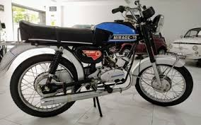
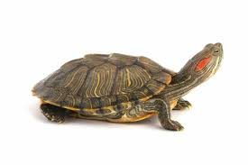
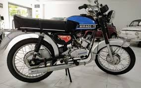
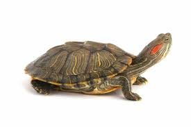

Os Meus Hobbies
Estão aqui alguns dos meus Hobbies:
- Jogos - Gosto de jogar diversos tipos de jogos online com os meus amigos.
- Motas - Adoro motas, seja ver, ouvir ou andar, se tiver motas eu adoro.
- Tartarugas - Simplesmente o melhor animal já criado, simples, duradoras e tranquilas.
- Música - Basicamente estou sempre a ouvir música.
 



Contacto
Email: edgarrgsoares@gmail.com
Telemóvel: +351 933 667 686
Instagram: edgarsoares06